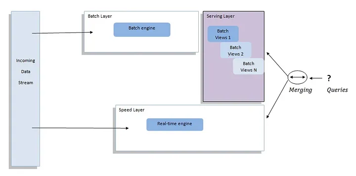
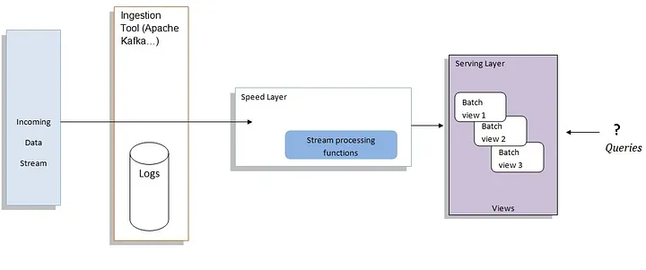
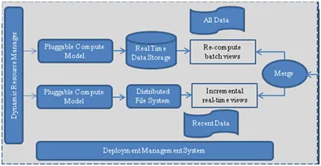
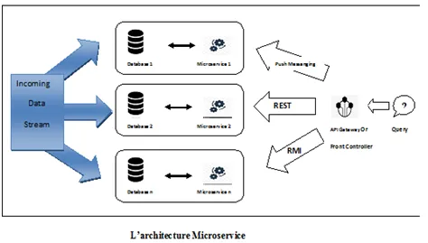
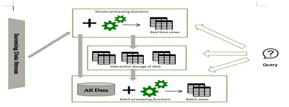

Big Data Architecture is the foundation for big data analytics.
It serves as a reference blueprint for big data infrastructures and solutions, logically defining how big data solutions will work, the components that will be used, how information will flow and security details.

(the process frequency should not be too high to minimize the tasks of merging the results to make up the view)
Speed Layer:
Serving Layer:

is a simplified alternative to Lambda Architecture.
Design mainly for handling streaming data
Batch Layer is removed and Speed Layer now can provide reprocessing capabilities

New approach, define a scable way to increase the speed of data integration into the business -> Make business powerful and data-centric.
Provide containers which isolate software enviroments that can be run and use.
Zeta Architecture consists of 7 elements:
Dynamic and Global Resource Management:
Pluggable Compute Model/Execution Engine:
Realtime Data Storage:
Distributed File System:
Deployment / Container Management System:
Solution Architecture:
focuse on solving specific business problems and combines one or more applications designed to provide the complete solution.
Enterprise Applications:


| Type of Treatment | Treatment Methodology | Data Frequency | Data Type | Data Format | Data Source | Data Consumers | |
|---|---|---|---|---|---|---|---|
| Lambda | Batch/Realtime | Query and Reporting | Real-time feed | Basic Data | Structured, Semi-Structured & Unstructured | Generated by Human/Machine, Web, Social Media | Human |
| Kappa | Realtime | Query and Reporting | Continuous Flows | Transactional Data | Structured, Semi-Structured & Unstructured | Generated by Human/Machine, Web, Social Media | Human |
| Zeta | Batch/Realtime | Query and Reporting | Ondemand stream | Transactional Data | Structured, Semi-Structured & Unstructured | Web and Social Media, Internal Data Sources | Business Applications |
| Microservice | Batch/Realtime | Query and Reporting/Analytic | Ondemand stream | Transactional Data | Structured, Semi-Structured & Unstructured | Internal Data Sources, Machine Generated | Business Process |
| IoT-a | Batch/Realtime | Query and Reporting/Analytic/Predictive Analysis | Ondemand stream | Basic Data | Structured, Semi-Structured, Unstructured | Generated by Machine | Human/other data repositories |